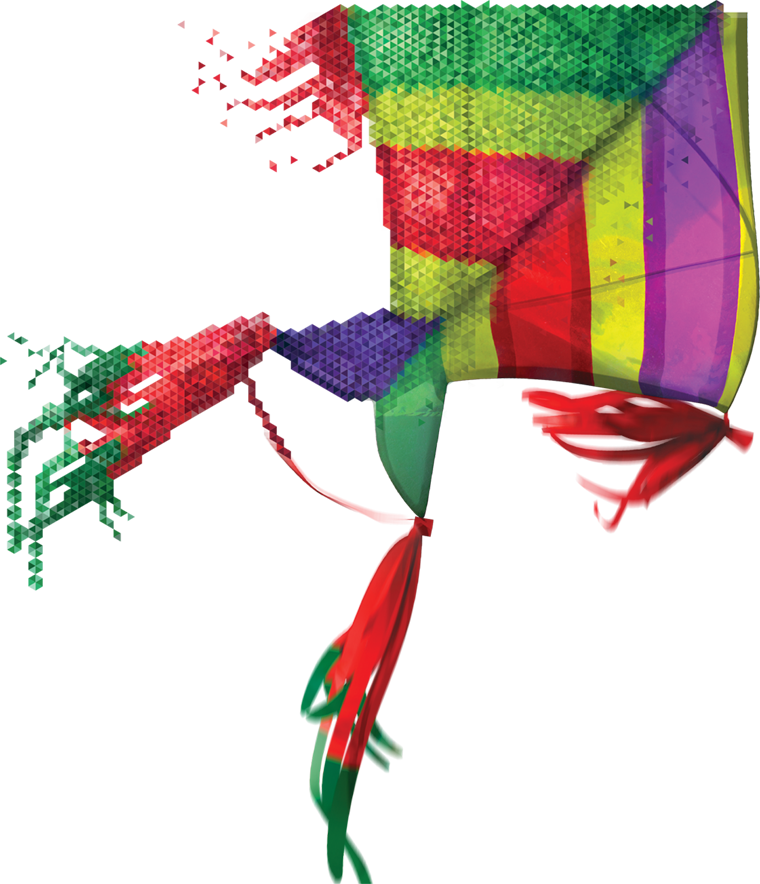

Back
Explore

Chairman's
Statement
Dear Shareholders,
Our journey towards realising our ambition to be a regional champion by 2015 is fast-approaching its mark. I am pleased to report that Axiata has upheld its promise – raising the performance bar whilst remaining committed in its transformation into a new generation telecommunications company by 2020.
Since demerger, we grew our subscriber base by more than 6x to serve over 260 million people in eight countries and our market capitalisation has increased more than four times to RM58.9 billion. Axiata’s share price performance continued to remain resilient, closing at RM7.05 at the end of 2014. Axiata is today one of the largest and respected Asian telecommunications companies.
These achievements are only the beginning of our journey. We are making bold moves and embracing new business models towards achieving Mobile Data Leadership, paving the way to become a truly Digital Company. More specifically, we have put in place a new growth strategy; driving continuous improvements to our businesses and operating models, and built new and stronger management teams, in our bid to become a ‘New Generation Telco’ by 2020. This is in the face of the rapidly evolving mobile industry as well as increased competition from existing players as well as OTT players invading our space emerging as a substitution to our services.
Our sustained underlying performance and strong cash position has allowed the Group to provide healthy returns to shareholders through a total dividend payout of 22 sen per share for the financial year ended 2014. The Group will continue to maintain a healthy dividend payout subject to overall financial performance, capital requirements, growth expansion strategies as well as dividends received from subsidiaries.
Commitment To Sustainable Long Term Value Creation
As we steer forward and strive to push our business to further excellence, Axiata remains committed to bring value and [positive] contribution to societies that we operate in, as one of the top contributors to the countries’ economies.
In the last six years, to support our business activities, we have spent more than RMxx billion in terms of CAPEX and created more than [one million jobs] throughout the ecosystem. This has translated into an estimated RMx billion (USDx billion) in direct and indirect economic contribution.
Beyond our business activities, we continue to make an impact to the societies and environment in which we operate especially, but not limited to, education, leadership development and digital inclusion. In 2014, we further enhanced our commitment in the areas of disaster preparedness. Axiata was one of three founder signatories of the GSM Association Mobile Industry Humanitarian Connectivity Charter that was signed in Barcelona in March 2015.
We remain focussed on adhering to the highest standards of corporate governance, transparency and sustainability reporting. Axiata’s recognition at the Malaysia-ASEAN Corporate Governance Index 2013 awards for Top 5 overall Corporate Governance for the second year in a row is testament to this. I am also proud to announce that Axiata has been recognised within a year of publishing our first GRI G4 sustainability report bagging two awards in recognition for our commitment.
Continued Recognition Of Management Excellence
Alongside these awards I am happy to note that that Axiata’s outstanding leadership continues to receive local and international recognition. It gives me great pleasure to have this opportunity to congratulate Dato’ Sri Jamaludin, President and Group CEO who was honoured with two very distinguished awards in 2014 for CEO of the Year at the MSWG-Asean Corporate Governance Transparency Index awards and Malaysia’s Outstanding CEO 2014, at the Edge Billion Ringgit Club. Most recently in March this year, Dato’ Sri Jamaludin was also the recipient of the 2015 GSM Association Chairman award. This award, established in 1996, and part of the annual Global Mobile Awards, is the GSMA’s most prestigious award which recognises outstanding personal contribution to the growth and development of mobile communications around the world.
The awards are an acknowledgement of his leadership and valuable contribution in shaping Axiata into one of Asia’s most successful mobile networks, creating value to the mobile industry across the region, whilst remaining unwavering in his commitment to strong corporate governance and transparency.
This year I am very pleased to welcome back Mr (Dr.) Muhammad Chatib Basri to the Axiata Board of Directors line-up. Having served as the Chairman of the Investment Coordination Board as well as Minister of Finance of Indonesia Mr Basri brings with him a wealth of experience and knowledge of Indonesia, one of our biggest markets in the region. In addition, he brings invaluable expertise in international trade and macroeconomics which extends beyond Asia, an important addition to Axiata as we move towards our goal of becoming a regional champion.
Acknowledgement
On behalf of the Board, I would like to thank our various stakeholders for the support you have given during the year. As always, special mention goes to the governments and regulators of the operating companies’ (OpCos) countries for their facilitation and co-operation. The Board also wishes to thank every employee and the management teams across the Group, our shareholders who continue to believe in our strategy of disciplined growth to strengthen the foundation for the future and our over 260 million customers across the region.
It thus gives me great pleasure to present to you the Axiata Annual Report 2014.

TAN SRI DATO’ AZMAN HJ. MOKHTAR
Chairman
Since demerger, we grew our subscriber base by more than 6x to serve over 260 million people in eight countries and our market capitalisation has increased more than four times to RM58.9 billion. Axiata’s share price performance continued to remain resilient, closing at RM7.05 at the end of 2014. Axiata is today one of the largest and respected Asian telecommunications companies.
These achievements are only the beginning of our journey. We are making bold moves and embracing new business models towards achieving Mobile Data Leadership, paving the way to become a truly Digital Company. More specifically, we have put in place a new growth strategy; driving continuous improvements to our businesses and operating models, and built new and stronger management teams, in our bid to become a ‘New Generation Telco’ by 2020. This is in the face of the rapidly evolving mobile industry as well as increased competition from existing players as well as OTT players invading our space emerging as a substitution to our services.
Our sustained underlying performance and strong cash position has allowed the Group to provide healthy returns to shareholders through a total dividend payout of 22 sen per share for the financial year ended 2014. The Group will continue to maintain a healthy dividend payout subject to overall financial performance, capital requirements, growth expansion strategies as well as dividends received from subsidiaries.
Commitment To Sustainable Long Term Value Creation
As we steer forward and strive to push our business to further excellence, Axiata remains committed to bring value and [positive] contribution to societies that we operate in, as one of the top contributors to the countries’ economies.
In the last six years, to support our business activities, we have spent more than RMxx billion in terms of CAPEX and created more than [one million jobs] throughout the ecosystem. This has translated into an estimated RMx billion (USDx billion) in direct and indirect economic contribution.
Beyond our business activities, we continue to make an impact to the societies and environment in which we operate especially, but not limited to, education, leadership development and digital inclusion. In 2014, we further enhanced our commitment in the areas of disaster preparedness. Axiata was one of three founder signatories of the GSM Association Mobile Industry Humanitarian Connectivity Charter that was signed in Barcelona in March 2015.
We remain focussed on adhering to the highest standards of corporate governance, transparency and sustainability reporting. Axiata’s recognition at the Malaysia-ASEAN Corporate Governance Index 2013 awards for Top 5 overall Corporate Governance for the second year in a row is testament to this. I am also proud to announce that Axiata has been recognised within a year of publishing our first GRI G4 sustainability report bagging two awards in recognition for our commitment.
Continued Recognition Of Management Excellence
Alongside these awards I am happy to note that that Axiata’s outstanding leadership continues to receive local and international recognition. It gives me great pleasure to have this opportunity to congratulate Dato’ Sri Jamaludin, President and Group CEO who was honoured with two very distinguished awards in 2014 for CEO of the Year at the MSWG-Asean Corporate Governance Transparency Index awards and Malaysia’s Outstanding CEO 2014, at the Edge Billion Ringgit Club. Most recently in March this year, Dato’ Sri Jamaludin was also the recipient of the 2015 GSM Association Chairman award. This award, established in 1996, and part of the annual Global Mobile Awards, is the GSMA’s most prestigious award which recognises outstanding personal contribution to the growth and development of mobile communications around the world.
The awards are an acknowledgement of his leadership and valuable contribution in shaping Axiata into one of Asia’s most successful mobile networks, creating value to the mobile industry across the region, whilst remaining unwavering in his commitment to strong corporate governance and transparency.
This year I am very pleased to welcome back Mr (Dr.) Muhammad Chatib Basri to the Axiata Board of Directors line-up. Having served as the Chairman of the Investment Coordination Board as well as Minister of Finance of Indonesia Mr Basri brings with him a wealth of experience and knowledge of Indonesia, one of our biggest markets in the region. In addition, he brings invaluable expertise in international trade and macroeconomics which extends beyond Asia, an important addition to Axiata as we move towards our goal of becoming a regional champion.
Acknowledgement
On behalf of the Board, I would like to thank our various stakeholders for the support you have given during the year. As always, special mention goes to the governments and regulators of the operating companies’ (OpCos) countries for their facilitation and co-operation. The Board also wishes to thank every employee and the management teams across the Group, our shareholders who continue to believe in our strategy of disciplined growth to strengthen the foundation for the future and our over 260 million customers across the region.
It thus gives me great pleasure to present to you the Axiata Annual Report 2014.
TAN SRI DATO’ AZMAN HJ. MOKHTAR
Chairman